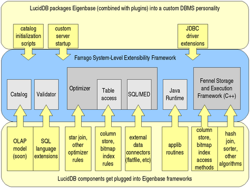

LucidDB/Eigenbase Integration
LucidDB is actually implemented as a set of plugins into frameworks
developed by The Eigenbase
Project. Eigenbase provides a system-level extensibility
framework called Farrago, which also integrates the Fennel framework for
native-code portions. For more information on how these frameworks
make possible extension projects such as LucidDB, see the
Farrago architecture doc.
The diagram below illustrates the integration:
